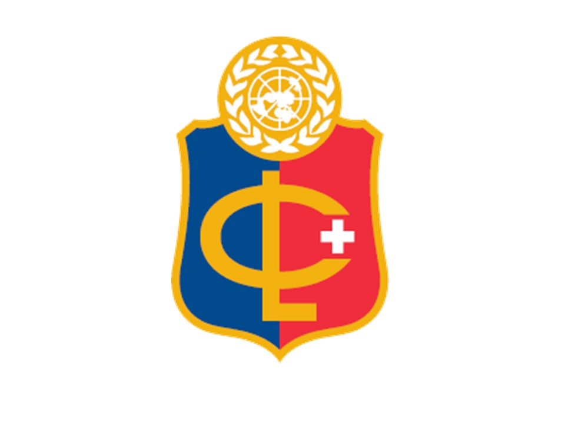

THE RUNNING COSTS OF THE SOCH ORPHANAGE
The SOCH orphanage cares for 28 children who live on the site during the school term. During holidays, these children return to their legal guardians. Older orphans who have left the orphanage continue to be supported in their secondary education at boarding schools and local high schools through provision of their fees and school uniforms. A few older orphans who dropped out of schooling are being trained in carpentry skills and in 2021, tailoring skills. An annual budget is set by Kevin Gilbert the co-founder of SOCH (who now acts as a Facilitator for SOCH, SOA, and ZOA), in collaboration with Angus Kamandete Chuma (SOCH Managing Director) and John Talbot (ZOA Coordinator in Rome) and Philip Shaw (SOA Coordinator in Geneva). In 2021, a minimum amount of GBP 24,000 will be needed to meet the running costs of SOCH. This amount is met through our partner school charities ZOA and SOA, sustainability projects at SOCH, and donations from the general public.
Children who complete secondary school are usually not formally supported further by SOA Geneva and ZOA Rome fundraising, since the top priority of SOCH is to give young vulnerable Primary School orphans a solid educational foundation through good diet, loving care, and the best local Primary School education. The second priority is to support those ex-SOCH orphans who continue to succeed at Secondary School, and those others who have not succeeded at Secondary School. Usually, tertiary fees are the last priority and these are sourced separately through Kevin Gilbert, Founder and Facilitator.
SUPPORTED BY ZOA & SOA

ZOA ('Zambian Orphans Appeal') is the main school charity of St George's British International School in Rome, Italy. Established in 2005 by Kevin Gilbert (then, a teacher at the school) as a means to support SOCH through the provision of funds for construction of buildings and annual running costs. The ZOA Teacher Coordinator is John Talbot. A ZOA student committee is elected each year and provides leadership across the campus for the annual fund-raising initiatives. Every 2 years, there is a student trip to Zambia where participants get to know the SOCH children and work at various projects identified by the SOCH leadership. ZOA now provides 32% of the annual running costs of SOCH.

SOA ('Serenje Orphans Appeal') is one of the school charities of Collège du Léman, Geneva, Switzerland. Established in 2009 by Kevin Gilbert (who was then a teacher at the school, but is now retired), SOA now also provides 32% of the annual running costs of SOCH and has been heavily involved in the SOCH Inn and Maize Mill sustainability projects. The Teacher Coordinator of SOA, Philip Shaw, works with SOA High School students to raise funds and awareness within the Collège du Léman community. Every 2 years, there is also a student trip to Zambia, very similar to the ZOA one. Sadly, the 2020 SOA trip has had to be cancelled because of the coronavirus pandemic.